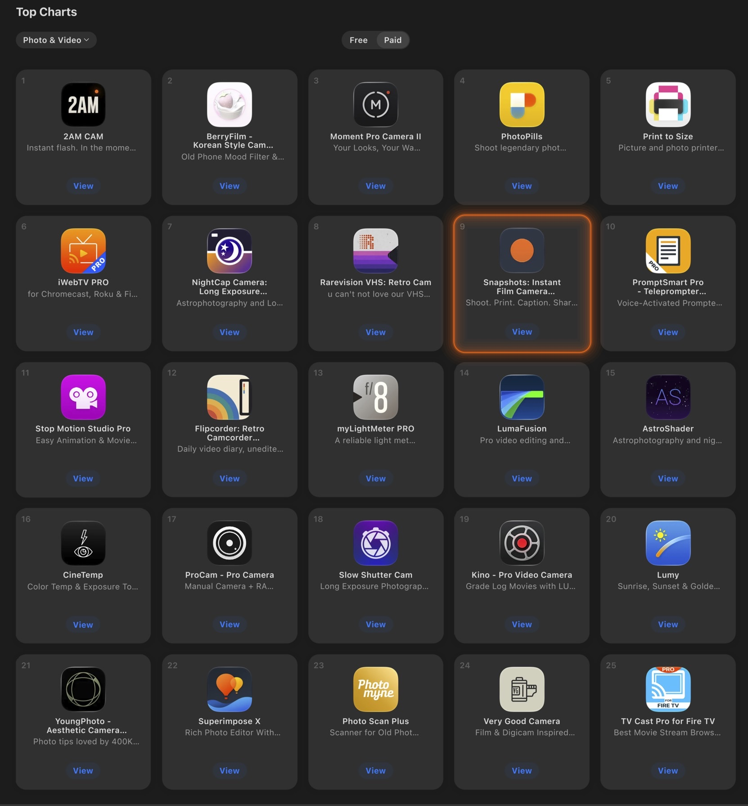

The camera
A real camera body
A big shutter, a film dial, and a counter for your pack of ten.
Snapshots turns your iPhone into an instant camera. Press the shutter, watch your photo print and develop, then write on it and keep it.


Instant cameras made you wait for the picture. Snapshots brings that back, right down to the sound of the printer.

The viewfinder is the shape of the print, so what you see is what you get.
Instant cameras made you wait for the picture. Snapshots brings that back, right down to the sound of the printer.
The viewfinder is the shape of the print, so what you see is what you get.
The printer whirs and your photo feeds out of its slot.
The picture fades up like instant film. Shake your phone and it comes up at once.
Write a caption across it, then save it to your gallery or throw it away.
One screen to shoot, one moment to wait, and a print to keep forever. Then add a few words to remember the story behind it.
A big shutter, a film dial, and a counter for your pack of ten.

It sits across the top of the screen and feeds out every photo you take.

Watch the colors appear, then add a handwritten-style caption.

Write a little memory, save to your camera roll, or share with friends.
The camera steps aside and your prints are laid out like photographs on a table. Flick through them, and tap one to pick it up.

Turn your iPhone on its side while it's charging and Snapshots becomes a bedside clock, with your prints shuffling past beside the time.

Set the timer to Booth, press the shutter once, and strike three poses on a countdown. All three print together as one tall snapshot.

Add a Snapshots widget and your favorite prints are there every time you unlock your phone, with a different one on top every hour.


Snapshots has a camera body, with parts that move the way real ones do.

On iPhone Duo, Snapshots is built around the fold. Shoot with it in the Seated pose, then unfold it flat and watch your photo print.
The upper screen is your viewfinder. The lower one becomes a camera body, with a shutter worth pressing.
The printer whirs and your photo waits in its slot, just peeking out.
Open the phone flat and the print feeds out onto a table to display in full view.
The picture fades up like instant film. Shake to hurry it along, then write a caption on the bottom.

Snapshots rearranges itself around the fold, so the controls are always under your thumbs and the viewfinder is always where you're looking.

Everything you need on the front display: shutter, film dial, zoom and your last print.

Viewfinder up top, flash, zoom and shutter below. Set it down, start the self-timer and step into the picture.
A clear viewfinder on one side and the whole camera on the other. Flip a rocker to swap them for your left or right hand.

Open it flat for a large viewfinder above the controls. Press the shutter and the whole display becomes the printer's table, with your print enlarged to fill it.
Open the gallery on the big display and your prints are spread out in front of you, with share, save and delete down the side where your thumb is.

Fold it shut and turn it sideways, and the front display lays your prints out like photographs on a table. Flick through them, and tap one to pick it up.

Stand your iPhone Duo up like a tent and the front display becomes a clock, with your prints shuffling past beside the time. Star White by day, Night Sky by night.

Snapshots has a camera body, with parts that move the way real ones do.


Turn the dial and the viewfinder changes live, so what you see is what prints.
golden hourToo excited to wait? Give the phone a shake and your snapshot develops immediately.
Add a caption along the bottom of your photo, in one of six fonts, to remember the story behind it.
Flip to the front camera, with a wider view for when you need to fit everyone in.
Three or ten seconds, or Booth for three in a row. Prop your phone up and step into the picture.
Tap to focus, press and hold to lock, then slide to brighten or darken.
Press it to take a snapshot. Press lightly to change the film, zoom, timer or brightness.
No accounts, no ads. Your photos stay on your phone.
For the moments that deserve more than a camera roll. Shoot, print, caption, and keep a little piece of your day.
#9 Top Paid · Photo & Video · October 2026

I've always been a huge fan of Apple products. I waited in line for the original iPhone, and I still remember the feeling of holding it for the first time: new, exciting and fun, like nothing I'd held before. It felt like the future!
Ever since that day I've wanted to build an app of my own. I just never found a reason big enough to start. iPhone Duo is that reason.
It brings that same feeling back, and inspired me to create something for it straight away. Snapshots is my first app, and the first thing I've ever felt compelled to make and share with the world.
I hope Snapshots gives you a little of that feeling too, and a shoebox full of memories worth keeping.
Ryan Fredericks